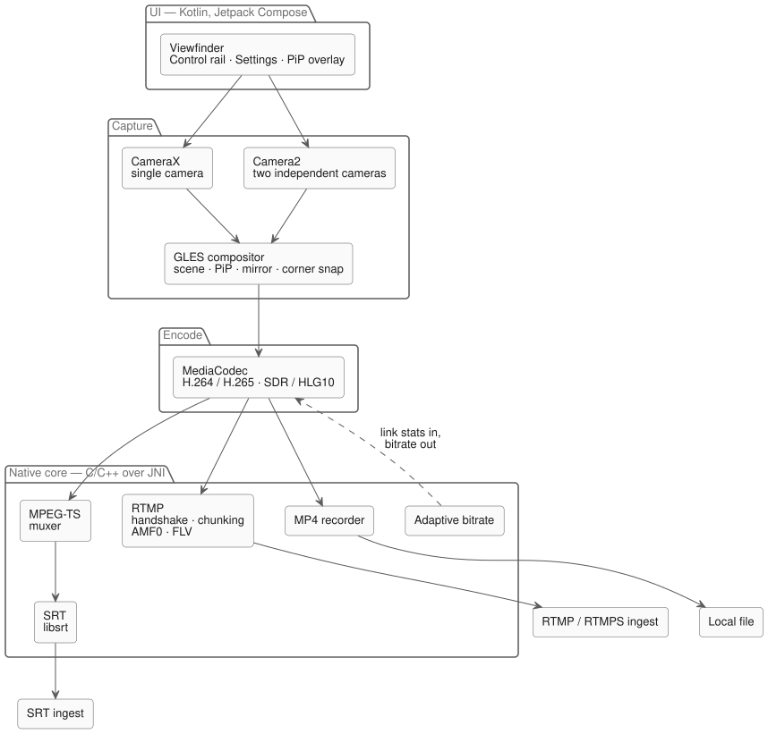
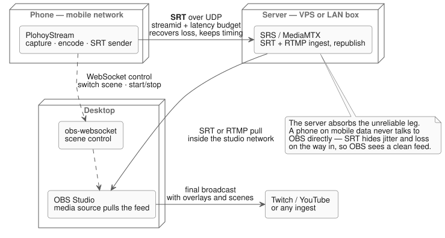

An Android app that streams the phone camera to an RTMP, RTMPS or SRT destination. You paste a URL, press record, and the feed shows up wherever you pointed it — OBS, a media server, Twitch.
iOS has Moblin for this and Android didn't have an equivalent I liked, so I started building one. I wrote the network stack myself in C/C++ instead of using a library, mostly because I wanted to understand how RTMP and SRT actually work rather than because it was the sensible choice.
It's a work in progress, and the honest version of how well it works is further down the page.
Watch it work
All three clips are OBS on a Mac, receiving a live feed from the phone over the network. Nothing is edited in — what you see in the OBS canvas is arriving from the handset in real time.
Single camera, walking indoors. The feed lands in OBS as a normal media source, so every scene, overlay and filter in the studio applies to it untouched.Dual-camera picture-in-picture. Front and back cameras run as two independent Camera2 inputs composited on the GPU before encoding — the receiving end gets one stream and never knows there were two sensors.Outdoors on a mobile connection. This is the case the whole architecture is built around: an unreliable uplink that still has to produce a clean picture at the other end.
The app itself
Landscape-first viewfinder with a glass control rail: live timer, current bitrate with a link-health indicator, lens chips tied to the phone's real physical lenses, pinch or slider zoom, manual exposure, PiP toggle, and one unmissable go-live button.
The bitrate readout is not decoration. It reflects what the adaptive bitrate loop in the native layer is actually doing to the encoder as the link changes — one screenshot above shows it holding around 6.4 Mbps, another sitting at 2.8 Mbps on a worse connection.
How a frame reaches the wire
Every layer below the UI is one I had to make a decision in, and the interesting ones are at the bottom.

Capture — CameraX for the simple single-camera path; raw Camera2 when two cameras have to run at once, because CameraX won't give independent control of both.
Compositing — both camera surfaces meet in a GLES compositor that draws the scene, the PiP window, mirroring and corner snapping on the GPU. Swapping which camera is the main view is instant because neither input is ever torn down.
Encode — MediaCodec, H.264 or H.265 with automatic negotiation against what the server advertises, and an HDR (HLG10) path where the device supports it.
Native core — the RTMP handshake, chunking, AMF0 and FLV muxing, MPEG-TS muxing and the SRT sender all live in C/C++ behind JNI, alongside the MP4 recorder and the adaptive-bitrate loop.
Writing the transport by hand meant I had to read the actual specs — the chunk format, the AMF0 encoding, how SRT negotiates a latency budget. That part paid off. Whether the code I ended up with should stay is a separate question, and the answer is probably no.
Why there's a server between the phone and OBS
The obvious design is to point the phone straight at OBS. It's also the wrong one, and understanding why is most of what this project taught me.

A phone on mobile data is the worst link in the chain: packets arrive late, out of order, or not at all, and the available bandwidth changes as you walk down a street. SRT is built for exactly that leg — it runs over UDP, holds a configurable latency budget (a few hundred milliseconds of buffer), and uses that window to retransmit whatever got lost and hand frames onward in the right order at the right time. TCP would rather stall the stream than drop anything; SRT keeps the clock moving, which is what live video needs.
So the phone doesn't talk to OBS. It talks to a media server — SRS or MediaMTX, on a VPS or a box on the LAN — which terminates the SRT session, absorbs all that jitter and loss, and republishes a clean feed. OBS then pulls from the server over the reliable part of the network and sees a stream that behaves like a local camera. Overlays, scenes and the final broadcast to Twitch or YouTube all happen there, where the connection is stable.
The server buys three things at once: the ugly leg is isolated to one hop, OBS never has to deal with a flaky source, and the same feed can be pulled by more than one consumer without the phone sending it twice.
There's a second, separate channel going the other way. The phone speaks obs-websocket straight to OBS to list and switch scenes and to start or stop the broadcast — control only, no video. That's what makes the automatic "Be Right Back" behaviour possible: when the app notices link health degrading, it flips OBS to a BRB scene so the audience sees a placeholder card instead of a frozen frame, then switches back once the stream recovers. The phone knows its own connection is dying before the viewers do, and acts on it.
What's built
Transport
RTMP, RTMPS and SRT egress. Handshake, chunking, AMF0 and FLV written from scratch; MPEG-TS muxing; SRT through libsrt with streamid and latency carried on the URL.
Codecs
H.264 and H.265 with automatic negotiation against the server's advertised codec list, plus a manual override for compatibility debugging. HDR (HLG10) capture-to-encode with SDR fallback.
Resilience
Adaptive bitrate driven from live link statistics. Foreground-service streaming that survives backgrounding and the screen going off, with reconnects.
Camera
Physical lens switching, pinch and chip zoom clamped to each sensor's real range, manual exposure, and dual-camera PiP that is draggable, resizable, corner-snapping and tap-to-swap.
Device handling
Reads each phone's certified concurrent-camera combinations at runtime and only offers lens and PiP pairs the hardware genuinely supports, degrading rather than crashing on unsupported pairs.
OBS integration
obs-websocket remote for scene listing and switching and start/stop control, with automatic Be Right Back switching on link degradation.
Recording
Local MP4 capture alongside the live stream, or instead of it.
Where it actually stands
Everything above works, in the sense that the clips are real and the stream arrives. But this is a project in the middle, not a finished app, and the list of things wrong with it is longer than the list of things I'd show off.
The picture falls apart when the connection does. As soon as the available bandwidth dips, the feed doesn't degrade gently — it breaks into green macroblocks across half the frame and stays broken for a while. That's the biggest problem with the project and it's in the part I was proudest of writing.
My hand-written core is probably not what ships. I learned the protocols by writing them, which was the point, but the result doesn't handle real network conditions well enough. I'm expecting to swap it for a proven implementation and keep my version as the thing I learned on.
It's had one phone's worth of testing. On a second device (an Oppo) the usual Android fragmentation showed up: not every camera sensor gets enumerated, parts of the control layout break, and the preview sometimes starts on the wrong aspect ratio — then fixes itself the moment anything forces a relayout, like dragging the PiP window or pressing a control. The capability detection is written to be phone-agnostic; it isn't yet.
Fixing how it behaves on a bad connection comes first, then the device matrix.